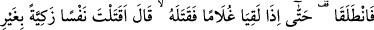
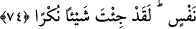
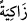
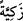

Allah’ım! Bizi inâyet ehli kullarından kıl.
74. Yine yürüdüler. Nihâyet bir erkek çocuğa rastladıklarında (Hızır) hemen onu
öldürdü. Mûsâ dedi ki: “Tertemiz bir canı, bir can karşılığı olmaksızın (kimseyi
öldürmediği halde) katlettin ha! Gerçekten sen fena bir şey yaptın!”
“Yine yürüdüler.” Yâni “Hızır (a.s.), Mûsâ (a.s.)’ın özrünü kabul etti. Beraberce
gemiden çıkıp gittiler. “Nihâyet” uğradıkları bir kasabanın dışında “bir erkek çocuğa
rastladıklarında” Hızır (a.s.) o güzel yüzlü ve uzun boylu çocuğu duvarın arkasına
götürüp “hemen onu öldürdü.” Yâni, bu karşılaşmanın ardından Hızır (a.s.) o çocuğu
öldürdü. Süheylî’nin nakline göre bu çocuğun ismi Ceysûr, Haysûr ya da Haynûn idi.
“O’nu öldürdü” demek; baş, şehâdet ve ortanca parmaklarıyla işaret ederek başını
kopardı, demektir. Nitekim Sahîhayn’da Übeyy b. Ka‘b (r.a.)’dan rivâyet edildiğine
göre Rasûlullah (s.a.) şöyle buyurmuştur: “Sonra gemiden çıktılar. Sâhil boyunca
yürürlerken Hızır (a.s), çocuklarla birlikte oynayan bir çocuk gördü. Çocuğun başını
tutup eliyle onu kopardı ve öldürdü.”[211]
“Mûsâ dedi ki:” “Tertemiz bir canı, bir can karşılığı olmaksızın (kimseyi
öldürmediği halde) katlettin ha!” Günahsız, mâsum birini mi öldürdün, dedi. Çünkü
çocuk küçüktü, henüz bulûğa, yâni günah işleme çağına ulaşmamıştı. Müfessirlerin
çoğunun görüşü budur.
İbn Kesîr, Nâfî ve Ebû Amr “
zâkiyeten” diye okudular, diğerleri ise “
zekiyyeten” diye okudular. Ebû Amr, bu iki okuyuşu birbirinden farklı görmüş,
“zâkiye”yi hiç günah işlemeyen, “zekiyye”yi günah işleyip sonra tevbe eden, diye izah
etmiştir.
“Bir can karşılığı olmaksızın” demek, birini öldürüp de kısası gerektiren bir durum
söz konusu olmadan demektir. Küçük çocuk birini öldürse kısas edilmez, denilmiştir.
Dolayısıyla âyetin zâhiri, çocuğun büyük yaşta oluşuna delâlet eder. Şu da var ki
şeriatlar farklıdır. Belki de onun şeriatına göre küçük çocuk kısas edilebiliyordu.
Nitekim Beyhakî’nin Kitâbu’l-ma‘rife’sinde naklettiği: “Ahkâmın bülûğa bağlanması
hicretten sonra olmuştur” ifâdesi de bunu te’yid eder. Şeyh Takıyyüddin Sübkî:
“Ahkam, Uhud savaşından sonra büluğa erme çağına bağlanmıştır.” demiştir.
İnsânu’l-uyûn’da şöyle denilmektedir: Ali (r.a.)’ın henüz büluğ çağına ulaşmamış
olduğunda ittifak edildiği halde müslüman olması geçerli olmuştur. Hz. Ali (r.a.)’ın da
şöyle dediği nakledilir.